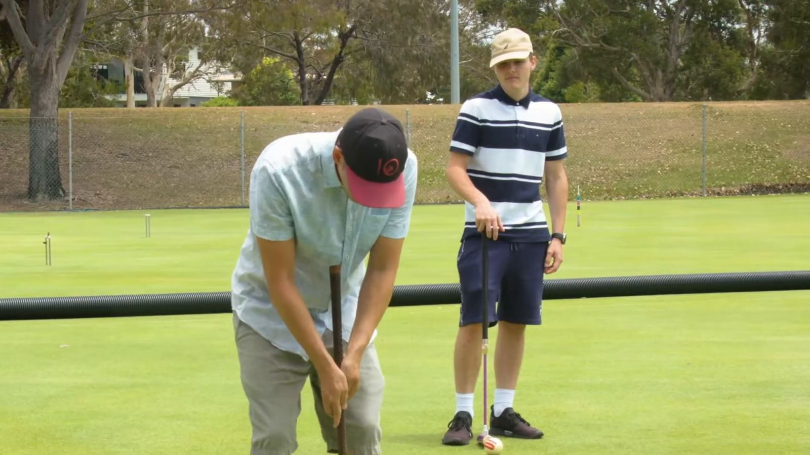
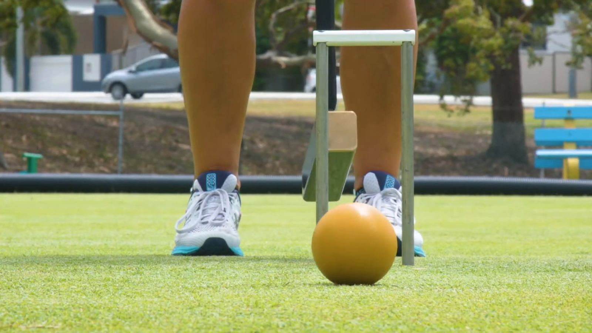
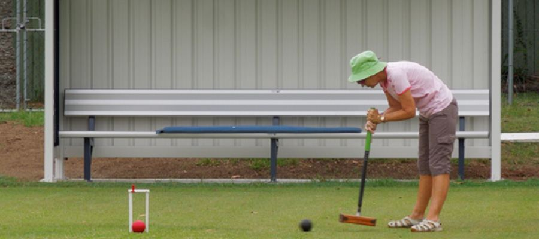

Get startedHave a go.
New players are always welcome at Stephens Croquet Club.
A session or two, at no charge.
- Come and enjoy croquet all year round. It is a great activity for all ages, parties, team building and work functions.
- Stephens Croquet Club has four full size courts and a clubhouse suitable for hire for your next meeting or event. To organise a clubhouse booking, phone the club on 0413 732 986.
- Croquet combines the skill of billiards and the strategy of chess but outdoors on grass. At Stephens Croquet, the two games played are Association Croquet (the "original" croquet) and Golf Croquet, a more recent game which is easy to learn. Ricochet is also played at times. More new players start with Golf Croquet.
- Come and try a session or two at no charge. Beginner coaching and playing equipment provided.

What to expect.
Come on a play day, meet a member, and have your first shots with a club mallet. Wear flat-soled shoes: they are a must on the courts.
For more information contact the club, or follow us on Facebook for upcoming events and recent photos from our croquet community.

Gateball, too.
Gateball was invented in 1947 in Hokkaido, Japan, by Eiji Suzuki, as a team game for young people that could be played with limited resources. It spread quickly through Japan, especially among the retired community, and is now played in dozens of countries. Instead of the single ball and long game of Association Croquet, gateball is played by two teams using numbered balls on a court about half the size of a croquet lawn, with each game run to a set time.
Stephens members have taken an interest in gateball alongside Association Croquet, Golf Croquet and Ricochet. It is a fast, social, team-based way into the sport, and CAQ runs competitions each year across all four croquet codes.